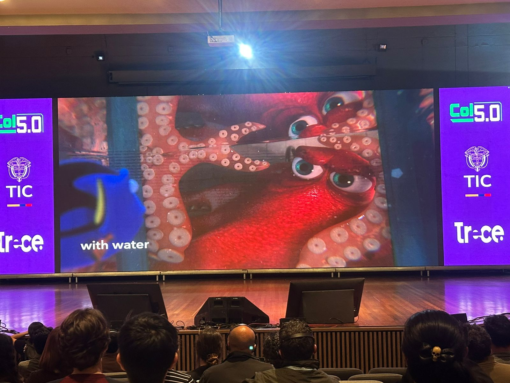
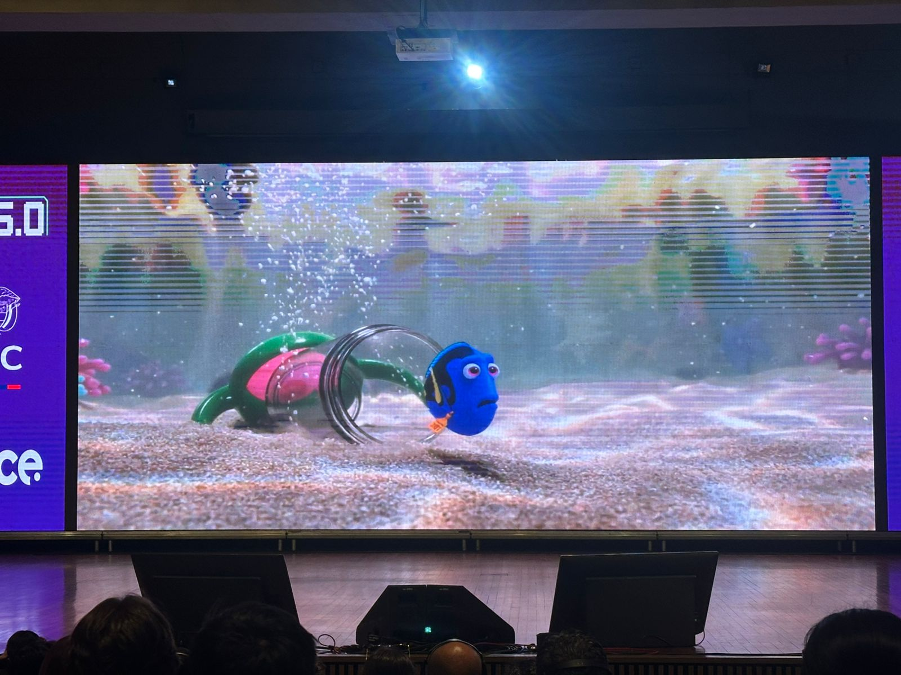
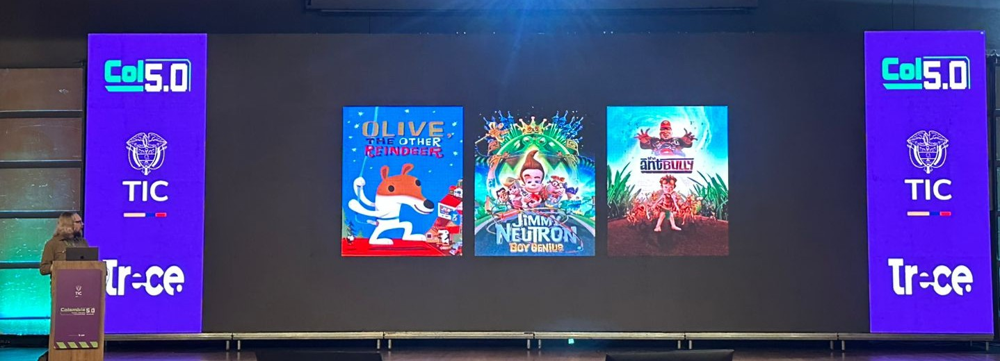
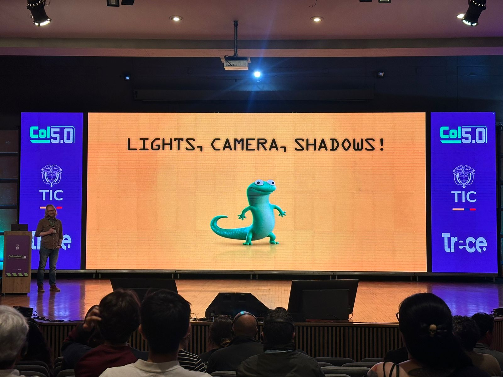
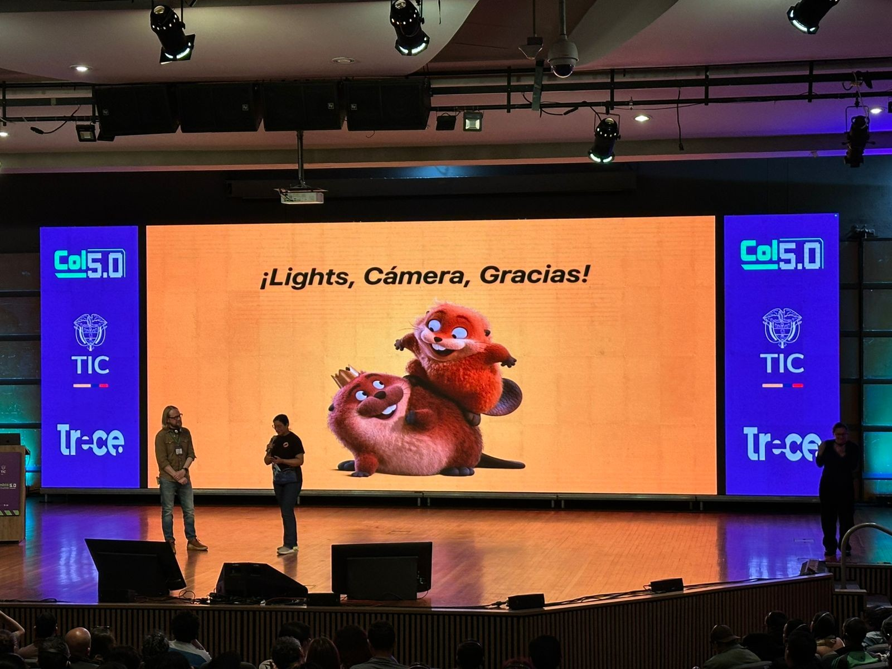
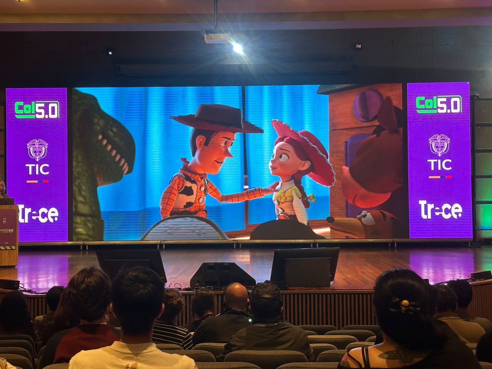

Descubre cómo la iluminación, la dirección de fotografía y las sombras transforman personajes e historias en producciones animadas de talla mundial.
Ha trabajado en producciones icónicas como Ratatouille, WALL-E, Up, Brave, Toy Story 3, Inside Out y Finding Dory.
Especialista en iluminación cinematográfica y dirección de fotografía para películas animadas ganadoras del Oscar.
Lights, Camera, Shadows! Una mirada al arte de construir emociones mediante iluminación y narrativa visual.
También explicó parte del proceso creativo utilizado en Pixar para desarrollar mundos visualmente impactantes y personajes memorables, destacando ejemplos de proyectos recientes como Hoppers.



Aprovechamiento del espacio y la luz para crear profundidad visual y estados emocionales en cada escena.
Cómo plasmar emociones a través de las cámaras. Cada encuadre cuenta una historia de inspiración y crecimiento.
Automatización inteligente y optimización de procesos. Mejora en trabajos manuales y aprovechamiento de herramientas.
Pixar ha podido llevar la animación a un nivel mucho más avanzado gracias al uso de herramientas digitales de modelado 3D, simulación y renderizado, creando películas con realismo visual impresionante.
Los equipos de arte, programación y narrativa pueden trabajar de forma conectada en sistemas digitales compartidos, incluso en diferentes lugares, haciendo la producción más organizada y eficiente.
Pixar ha logrado mantener una calidad consistente en sus producciones, lo que fortalece su marca y le permite seguir siendo un referente mundial en la industria de la animación.



Define la apariencia visual y la narrativa de cada escena.
Crea emociones, profundidad y realismo en los personajes.
Próxima producción animada donde Ian lideró aspectos visuales clave.
Referente mundial en innovación y animación digital.
Ian nos muestra que en cada uno de sus trabajos va mejorando sus técnicas y el aprovechamiento de las luces y el contraste para que cada espectador se adapte a la película y mejore su experiencia, logrando destacar entre las producciones más reconocidas del cine.
También nos enseña que el trabajo en equipo detrás de cámaras es la parte más importante de la creación de estos contenidos, ya que así ha logrado cautivar sentimientos y enseñanzas para el diario vivir.